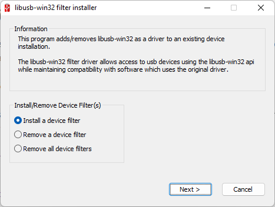
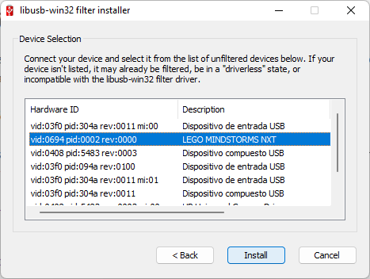

Conexión usando USB
Para conectar el LEGO NXT por USB al PC, necesitaremos tener dos programas adicionales instalados:
- Instalar el Controlador Fantom para NXT que pudiste descargar directamente del enlace anterior o de la página de LEGO. Una vez instalador el controlador.
-
Instalar el software LibUSB para Windows. Este programa nos ayudará a que la conexión USB sea reconocida por PyUSB en Python.
Para instalar el LEGO NXT usaremos el Filter Wizard, abrimos la aplicación

hacemos clic en siguiente, seleccionamos el NXT (el cual debe estar conectado al PC y prendido)

y lo instalamos.
-
Verificar la conexión del LEGO NXT:
Para la verificación usaremos el siguiente código, recordemos activar el ambiente virtual.
import nxt.locator # Find a brick. with nxt.locator.find() as b: # Once found, print its name. print("Found brick:", b.get_device_info()) # And play a recognizable note. b.play_tone_and_wait(440, 10000)Código tomado de la documentación de nxt-python
-
Probemos un codigo para mover un motor conectador en el Puerto A:
El código de prueba lo podemos descargar de aquí, que es igual al mostrado a continuación, Debemos cambiar la dirección MAC del LEGO por la correcta.
import nxt.locator import nxt.motor with nxt.locator.find() as b: # Conectar el motor en el Puerto A my_motor = b.get_motor(nxt.motor.Port.A) print("Presiona Ctrl-C para interrumpir el programa") while True: # Hará una rotación completa en una dirección my_motor.turn(25, 360) # Hará una rotación completa en la otra dirección my_motor.turn(-25, 360)
Para más información de las funciones que se pueden usar consultar la documentación.